Bài 18: Tùy chọn đóng băng và xem
Bài 18: Freezing Panes và View Options
/en/excel/basic-tips-for-working-with-data/content/
Giới thiệu
Bất cứ khi nào bạn làm việc với nhiều dữ liệu, có thể khóso sánhthông tin trong sổ làm việc của bạn. May mắn thay, Excel bao gồm một số công cụ giúp bạn xem nội dung từ các phần khác nhau trong sổ làm việc của bạn cùng một lúc dễ dàng hơn, bao gồm khả năngđóng băngcác ngănvàtáchtrang tính của bạn.
Xem video bên dưới để tìm hiểu thêm về cách cố định khung trong Excel.
Để cố định hàng:
Bạn có thể luôn muốn xem một số hàng hoặc cột nhất định trong trang tính của mình, đặc biệt làô tiêu đề. Bằng cáchđóng bănghàng hoặc cột tại chỗ, bạn sẽ có thể cuộn qua nội dung của mình trong khi tiếp tục xem các ô được cố định.
- Chọnhàngbên dưới (các) hàng bạn muốnđóng băng. Trong ví dụ của chúng tôi, chúng tôi muốn cố định các hàng1và2, vì vậy chúng tôi sẽ chọn hàng3.
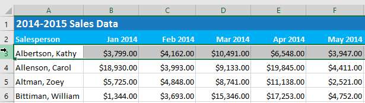
2. Trên tabXem, chọn lệnhFreeze Panes, sau đó chọnFreeze Panestừ trình đơn thả xuống.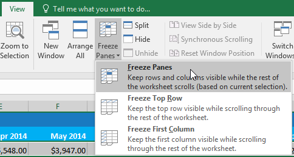
3. Các hàng sẽ đượcđóng băngtại chỗ, như được biểu thị bằngdòngmàu xám*. Bạn có thể*cuộn xuốngbảng tính trong khi tiếp tục xem các hàng cố định ở trên cùng. Trong ví dụ của chúng tôi, chúng tôi đã cuộn xuống hàng18.
Để cố định cột:
- Chọncộtở bên phải (các) cột bạn muốnđóng băng. Trong ví dụ của chúng tôi, chúng tôi muốn cố địnhcột A, vì vậy chúng tôi sẽ chọn cộtB.
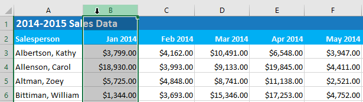
2. Trên tabXem, chọn lệnhFreeze Panes, sau đó chọnFreeze Panestừ trình đơn thả xuống.3. Cột sẽ đượcđóng băngtại chỗ, như được biểu thị bằngdòngmàu xám*. Bạn có thể*cuộn quabảng tính trong khi tiếp tục xem cột cố định ở bên trái. Trong ví dụ của chúng tôi, chúng tôi đã cuộn qua cộtE.
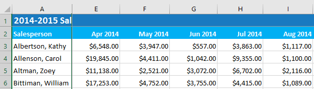
Nếu bạn chỉ cần cố địnhhàng trên cùng(hàng 1) hoặccột đầu tiên(cột A) trong bảng tính, bạn chỉ cần chọnCố định hàng trênhoặcCố định cột đầu tiêntừ trình đơn thả xuống.
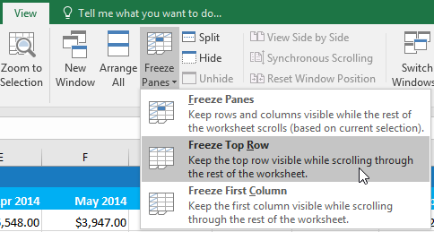
Để giải phóng các ngăn:
Nếu bạn muốn chọn một tùy chọn chế độ xem khác, trước tiên bạn có thể cần phải đặt lại bảng tính bằng cách giải phóng các ngăn. Đểhủy cố địnhhàng hoặc cột, hãy nhấp vào lệnhFreeze Panes, sau đó chọnUnfreeze Panestừ trình đơn thả xuống.
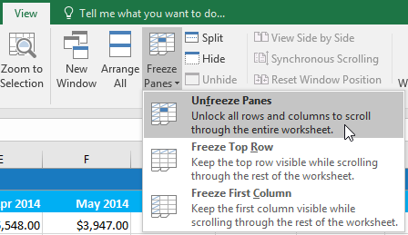
Tùy chọn xem khác
Nếu sổ làm việc của bạn chứa nhiều nội dung, đôi khi có thể khó so sánh các phần khác nhau. Excel bao gồm các tùy chọn bổ sung để làm cho sổ làm việc của bạn dễ xem và so sánh hơn. Ví dụ: bạn có thể chọnmở mộtcửa sổ mớicho sổ làm việc của mình hoặctáchtrang tínhthành các ngăn riêng biệt.
Để mở một cửa sổ mới cho sổ làm việc hiện tại:
Excel cho phép bạn mởnhiều cửa sổcho một sổ làm việc cùng lúc. Trong ví dụ của chúng tôi, chúng tôi sẽ sử dụng tính năng này để so sánh haibảng tínhkhác nhau từ cùng một sổ làm việc.
- Nhấp vào tabXemtrênRibbon, sau đó chọn lệnhMớiCửa sổ.
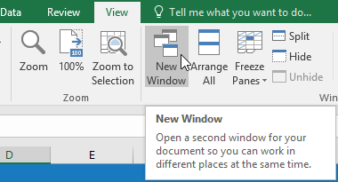
2. Cửa sổ mớidành cho sổ làm việc sẽ xuất hiện.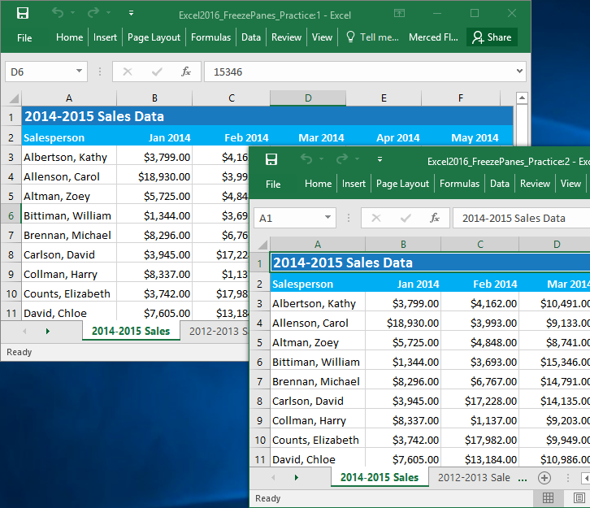
3. Bây giờ bạn có thể so sánh các trang tính khác nhau từ cùng một sổ làm việc trên các cửa sổ. Trong ví dụ của chúng tôi, chúng tôi sẽ chọn bảng tínhChế độ xem chi tiết doanh số bán hàng năm 2013để so sánh doanh số bán hàng2012và2013.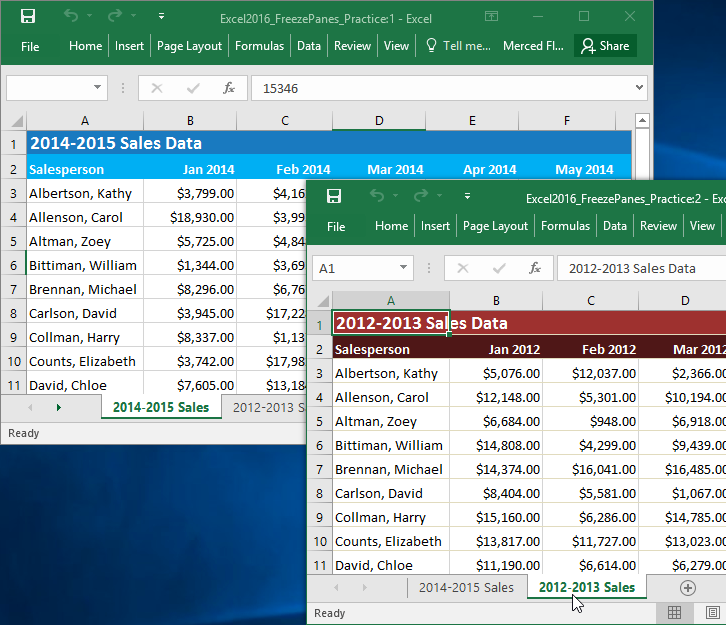
Nếu bạn mở nhiều cửa sổ cùng lúc, bạn có thể sử dụng lệnhSắp xếp tất cảđể sắp xếp lại chúng một cách nhanh chóng.
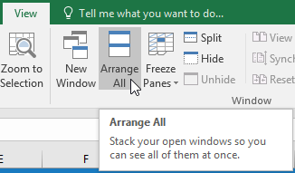
Để chia một bảng tính:
Đôi khi bạn có thể muốn so sánh các phần khác nhau của cùng một sổ làm việc mà không cần tạo cửa sổ mới. LệnhSplitcho phép bạnchiabảng tính thành nhiều ngăn cuộn riêng biệt.
- Chọnônơi bạn muốn chia trang tính. Trong ví dụ của chúng tôi, chúng tôi sẽ chọn ôD6.
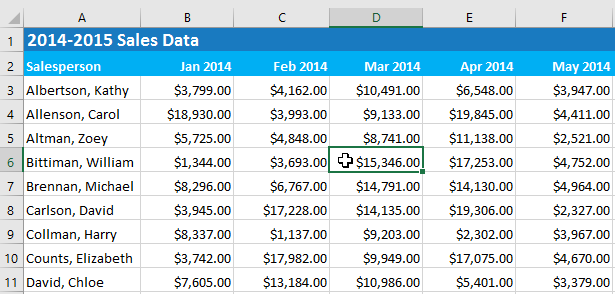
2. Nhấp vào tabXemtrênRibbon, sau đó chọn lệnhSplit.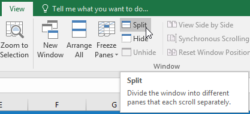
3. Sổ làm việc sẽ đượcchiathành cáckhungkhác nhau. Bạn có thể cuộn qua từng ngăn riêng biệt bằngscroll bar, cho phép bạn so sánh các phần khác nhau của sổ làm việc.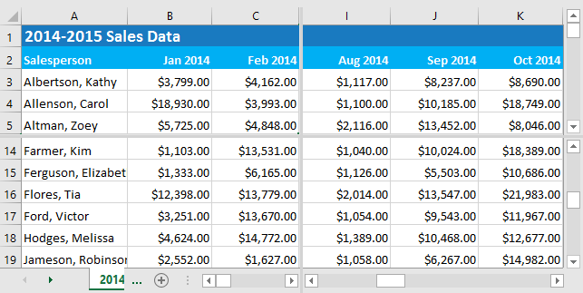
4. Sau khi tạo phần chia, bạn có thể nhấp và kéo các vạch chia dọc và ngang để thay đổi kích thước của từng phần.Để xóa phần tách, hãy nhấp lại vào lệnhSplit.
Thử thách!
Trong tệp ví dụ của chúng tôi, có RẤT NHIỀU dữ liệu bán hàng. Đối với thử thách này, chúng tôi muốn có thể so sánh dữ liệu của các năm khác nhau cạnh nhau. Để làm điều này:
- Mở sổ làm việc thực hành của chúng tôi.
- Mởcửa sổ mớicho sổ làm việc của bạn.
- Dừng cột đầu tiênvà sử dụng scroll bar ngang để xem doanh số bán hàng từ năm 2015.
- Giải phóngcột đầu tiên.
- Chọn ôG17và nhấp vàoTáchđể chia trang tính thành nhiều ngăn.Gợi ý: Thao tác này sẽ chia trang tính thành các hàng 16 và 17 cũng như cột F và G.
- Sử dụng scroll bar ngang ở dưới cùng bên phải của cửa sổ để di chuyển trang tính sao choCột N, chứa dữ liệu cho tháng 1 năm 2015, nằm cạnhCộtF.
- Mởcửa sổ mớicho sổ làm việc của bạn và chọn tabDoanh số 2012-2013.
- Di chuyển các cửa sổ của bạn để chúng ở cạnh nhau. Bây giờ bạn có thể so sánh dữ liệu của các tháng tương tự từ nhiều năm khác nhau. Màn hình của bạn sẽ trông giống như thế này:

/en/excel/sắp xếp-dữ liệu/nội dung/